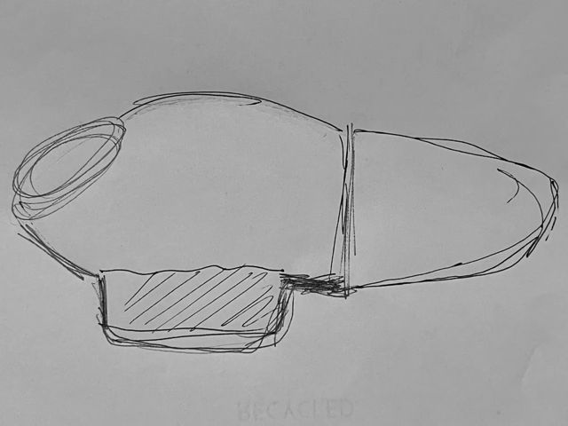

The parent body is one clear body made of two parts held by magnets: the gel chamber, with a flat floor and the gel trough under it, and the tail, a tapering shell with the folded Rotrics DexArm inside. The hull follows the logic of the artist's side section and every dimension is calculated (see How each dimension is set); the arm, the parts in the tail and the magnets are those of the v2 design. Following the decisions of 20 and 21 November 2026, the gel chamber is a hard shell with no belly pleats, no top ring, no petals, no lips and no sock canal. The birth opening in the vertical front face is a plain opening with a thin 3 mm lip and no magnets; the docking face is at the other end of the gel chamber, with a thin 4 mm lip and the three magnets. As in the artist's sketch of 21 November, the gel sits only in a small trough under the gel chamber, sized to the folded newborn, and comes from the tail through a bottom channel; the rest of the gel chamber stays air. The arm comes out of the tail, changes the needle module for the suction module at a small rack, places one electronics kit with the suction cup, changes back to the needle module, prints the folded newborn around the kit, then pushes the newborn up a smooth chute and out of the birth opening. All the air comes through the arm: a pump in the tail, an air line along the boom and the arm, the needle in the newborn's valve. While the arm pushes, each segment opens only after the segment has passed out through the opening; at full reach the arm holds the needle in until the body is full, about 0.53 m long and 0.38 m across, then lets go. There are no contractions.
The staging: the whole cycle is shown inside one square glass tank on a dark plinth in a black room, under a single lamp straight above, the way a museum lights a vitrine, so the birth is watched in a pool of light with the room and the people in the dark. The mood follows tank and aquarium works and artists' films, among them Pierre Huyghe's aquariums, Philippe Parreno's lit rooms, Liam Young's film worlds and Ian Cheng's live simulations; nothing is copied from them. The light is one spotlight with soft shadows; the ripples on the water throw moving caustics on the parent body, the tank floor and the glass, and the picture is finished like film (ACES tone mapping, bloom, a little grain, a shallow focus when the camera is close). The switch above the view adds a few slow inner lights in the parent body and the newborn, which grow stronger at the birth. None of this changes the physics.
The tank: no stock aquarium found is large enough, so the tank drawn here is made to order, 4.80 by 4.80 m inside with 45 mm clear acrylic walls and 0.48 m of water, about 11,100 L and 12.2 t filled (water and walls, calculated here). The closest stock tank found is the Custom Aquariums 280 Gallon Glass Aquarium: 96 by 24 by 24 in outside (2.44 by 0.61 by 0.61 m), 1/2 in glass, 223 gallons (844 L) of real volume, 3,217.80 to 5,972.45 USD, built in 40 to 50 business days, as published on 21 November 2026; the inside is about 2.41 by 0.58 m (outside less two panes, calculated) and the maker does not publish the filled weight (about 1.0 t, calculated). The largest stock sizes of that maker and of Clear-For-Life acrylic are all 24 in wide. To use that tank the parent body, 0.60 m wide and 1.33 m long, would have to shrink to about 85 percent, the tail would have to start 0.3 m away in place of 1.4 m, and the newborn's first swim would shorten from 2.0 m to about 0.5 m in a straight line.
Every number on this page comes from stage3_egg.json, written by a Python script (bnm_design/stage3_egg/physics_egg.py) that reads the same mesh file the page draws. The body is designed in bnm_design/baby_fullsize/ (a design study with figures). The browser replays and interpolates. The clock shows real process time; the view runs as a time lapse, slower during the birth.

The gel chamber and the tail float as one egg once docked. The script rasterizes the bottom of each exported hull on a 4 mm grid and integrates the volume under a tilted water plane, so the script finds the waterline and the trim where buoyancy equals weight and the center of buoyancy lies under the center of gravity. The tail carries water ballast in a keel tank so the tail floats at the docking height, and the gel chamber takes a little water into two ballast bags; while gel comes into the trough the tail pumps out as much water, so the egg keeps that height. A small trim tank in the tail end, run by the tail pump, holds the egg level as the arm moves out on the boom. Waves are drawn but do not move the hulls.
The trough is a box, 270 by 180 mm inside, around the folded print, with a flat floor that hangs a little below the curved hull like a shallow keel. The gel covers the print by 15 mm: 7.3 L of gel instead of about 30 L to fill the bottom of the gel chamber to the same level. A gel pump and a 1 L buffer in the tail push the gel through a 12 mm line in the bottom channel into the floor of the trough (Bingham flow, yield stress 25 Pa, an estimated plastic viscosity of 0.3 Pa s); the buffer is topped up through the dock line, because carrying all the gel would sink the tail below the docking height. The trough fills from below in about 3.6 minutes and levels by itself. The DexArm cannot pass through a low channel, so the arm still comes out through the docking bore and reaches down into the trough.
Planar motion of the tail (surge, sway, yaw) with added mass, quadratic drag, two small pump thrusts from the datasheet values of the DFRobot FIT0800, a speed loop and line of sight steering. A 37.5 degree cone in the docking face centers the collar in the last 30 mm. The three FluxGrip electropermanent magnets switch on after contact (250 N each on the steel pads, per the manual). The small pumps make the egg slow: the readouts give the speed and the turning rate.
The DexArm stands on the tail's boom. A second telescopic stage lets the boom carry the arm out through the docking bore and on over the trough. Forward kinematics are those of the Stage 2 meshes, and the inverse kinematics keep every joint inside the official ranges of the DexArm (base plus or minus 110, J1 0 to 110, J2 0 to 85 degrees); how J1 and J2 map onto the mesh angles is an assumption, written in the data file. The boom is a fourth axis (A in the G-code). For every printed point, every kit move and every push step the script poses all arm links and the tool and measures the distance to the shell, the trough walls, the docking wall and lips, the stern plate, the opening rim, the chute, the cradle and the parts in the tail; the target is 10 mm. The needle in the work is left out of that count.
The DexArm modules attach by the Rotrics quick release: pressing the button on the end effector releases a module, and the next one is pushed on until the latch clicks, with power and signal through the 5 pin module port (Rotrics manual). The tail is too tight for a rack (the folded arm passes within 2 mm of the tail shell wherever a slot was tried), so the rack stands just inside the gel chamber beside the docking wall: two forks on posts from the floor, slot A for the suction module on the port side and slot B for the needle module on the starboard side. To park a module the arm slides the module into the fork; a pin on the fork presses the release button and the bare end effector lifts off. To take a module the arm comes down onto the module until the latch clicks and slides the module out. Every pose of both changes is checked for reach and for 10 mm to the shell, the forks and the other module. Rotrics asks for the arm to be switched off for a change, so a change under power needs a bench test.
The suction module is the Rotrics pneumatic module with the 15 mm cup of the Rotrics suction cup set, on the same 150 mm stem as the needle so both modules share one tool point, run from the Air Pump Box in the tail (M1000 pump in, M1002 release air, M1003 close the valves). Rotrics publishes no vacuum figure; the 35 kPa of the pump and the 350 g payload come from a reseller's listing of the pneumatic kit, and the cup is assumed to seal at 60 percent on the flat top of the kit's silicone saddle. The cup lifts the 108 g kit from the cradle, carries the kit through the air, lowers the kit straight down through the gel onto the three seat cups, releases the vacuum and lifts clear. Going down, the gel pushes the kit into the cup, so the cup pulls hardest while carrying the kit in air; the readouts give the holding force, the load and the margin.
The newborn is printed folded, 200 mm long and 120 mm across, so the newborn fits the trough and the arm's reach and passes the opening. Each of eight segments is a Kresling story with sixteen radial star pleats, and the middle segment is a waist band whose belly carries the kit saddle. Opening the folds gives a design size of about 0.42 by 0.30 m; a 25 percent stretch of the skin then takes the creases out and gives the full size. The stretch stays below the limit point of the Dragon Skin 10 NV membrane (stretch 1.38 in the neo-Hookean model), so the body grows evenly instead of bulging in one place. The size is limited by how much skin packs into the printed envelope: folds closer than a wall plus 2 mm of gel cannot be printed. The G-code is the slicing of the folded body into 1.5 mm layers around the kit.
Before the climb, air through the needle at 450 Pa pushes the gel trapped inside the folded body out of a small duckbill vent in the nose, while the body still lies in the gel; the gel round the body keeps the folds shut. That halves the weight the arm has to push up the chute. The chute is lined with PTFE film and wet with gel (friction taken as 0.2), and the septum and push boss sit 20 mm below the axis on the tail cap, so the arm pushes lower and the forearm keeps clear of the shell under the opening. The second boom stage is an aluminum box tube, stiff enough to hold the deflection under 3 mm at full reach.
The body is cut into slices. A slice in the gel weighs almost nothing, because the folded body is mostly gel, and costs only the yield drag of the gel. Every slice on the chute in air costs the slice's weight times the sine of the slope plus friction times the cosine. The air pump (12 L/min through the 12G needle) is metered by the push position: only the segments outside the opening get air, at the pressure that opens the folds, and the push waits for the air, so the segments open one by one, front first. An opened segment outside is wider than the rim, so the pressure on the rim pulls the body out and the arm force falls. All the air comes through the arm: a pump in the tail, an air line along the boom and the arm, and the needle in the valve on the tail cap. At full reach the arm stops and holds the needle in while the rest of the air goes in; the segments still inside are at the narrow tail end and open at the rim, which is sized for them. When the body is full the needle comes out, the arm lets go, and the body slides off the lip into the water.
The full size newborn floats very high, so the kit pumps take water into a belly pocket until the pumps sit 50 mm under water; the kit and the water keep the newborn upright. The newborn swims on the two kit jets: thrust is mass flow times jet speed, with the flow where the pump curve meets the jet head.
stage3_egg_print.gcode · stage3_egg.json · ECO62 version (a separate design) · Stage 2 console · earlier Stage 3 draft, kept for reference.
The page, the script and the model were written with Claude.